OSI 第一層:網路線材、光纖與接頭
網路工程師必修:銅纜 / 光纖 / 連接器 / 光模組 / 損耗預算 / L1 故障排除(附圖與速記)
0. OSI 第一層(Physical Layer)在做什麼
第一層只關心一件事:把「位元(bit,0 與 1)」變成能在媒介上傳遞的訊號,並在另一端還原。它不認識 MAC、IP、port,只管電壓、光、無線電、時脈、接頭腳位、線材規格與傳輸距離。
第一層的範圍
- 傳輸媒介:銅纜(雙絞線、同軸)、光纖、無線
- 接頭與腳位:RJ45、LC、SC、MPO、SFP 插槽…
- 訊號:電壓/光功率、線路編碼(如 8b/10b、64b/66b、PAM4)、時脈同步
- 拓樸與距離:最長線長、衰減、串音、損耗預算
- PDU:Bit
- 典型設備:網卡 PHY、Hub、Repeater、Media Converter、光模組(SFP)、線材本身
網路工程師為什麼要懂
- 許多「網路不通」其實是線、接頭、光模組、髒污問題,先排 L1 最省時間
- 採購與施工:選錯線等級、光纖類型或接頭,整條鏈路都要重做
- 讀得懂
1000BASE-T、10GBASE-SR、OM4、LC/UPC這些縮寫,是 CCNA / Network+ / 現場作業的基本功
本教材的結構:銅纜 → 光纖 → 光模組 → 銅光比較與選型 → L1 故障排除 → 考試速記。每節的圖片皆來自 Wikimedia Commons(自由授權),來源列於文末。
1. 銅纜(Copper Cabling)
1.1 雙絞線(Twisted Pair)原理與結構
雙絞線把兩條導線互相纏繞成一對。兩條線傳的是方向相反的差動訊號,外界干擾(EMI)對兩條線的影響幾乎相同,接收端相減後就被抵消;纏繞也降低線對之間的串音(Crosstalk)。每對的絞距(twist rate)都不同,避免相鄰線對互相干擾。
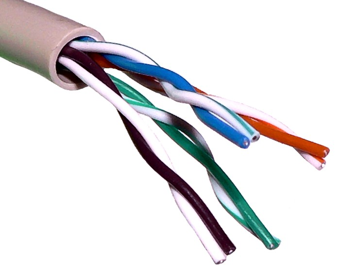
外觀:4 對 = 8 條導線
- 一條網路線 = 4 對 = 8 條導線
- 四對的顏色:橘、綠、藍、棕;每對由「純色線 + 白底色線(白線帶色條)」組成
- 每對的絞距不同,避免相鄰線對互相串音
- 線徑約 22–24 AWG,導體為銅
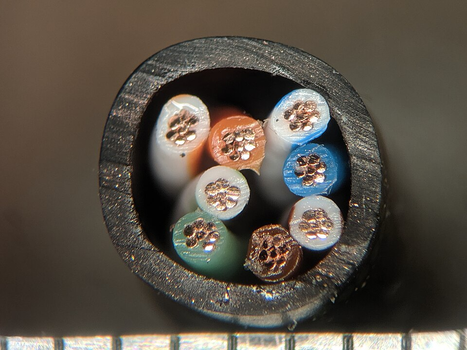
橫切面:實心線 vs 絞線
- 實心線(solid):衰減小,用於建築內固定佈線(牆內、天花板、至 patch panel / 資訊插座)
- 絞線(stranded):每條導體由多股細銅線組成,柔軟耐彎折,用於跳線(patch cord);圖中即為跳線
- 標準通道長度:最長 100 m(固定走線 ≤ 90 m + 兩端跳線合計 ≤ 10 m)
1.2 遮蔽類型:U/UTP、F/UTP、U/FTP、S/FTP…
ISO/IEC 11801 命名法為 「整條線的總遮蔽 / 每對線的遮蔽 + TP」:U = 無遮蔽、F = 鋁箔(Foil)、S = 編織網(Screen / Braid)。例如 S/FTP = 整條有編織網、每對有鋁箔。
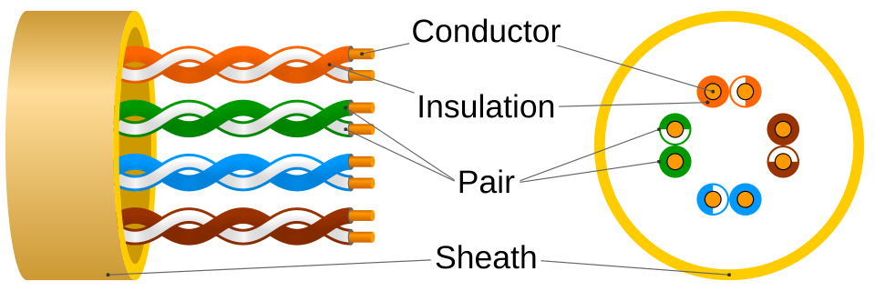
U/UTP(常稱 UTP)
- 總遮蔽:無;線對遮蔽:無
- 最常見、最便宜,辦公室水平佈線主流
- Cat5e / Cat6 多為此結構
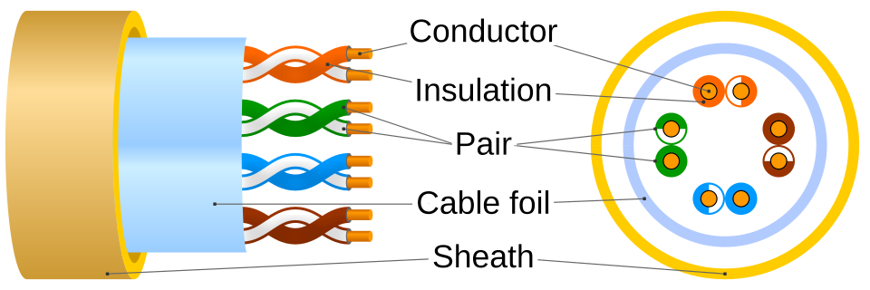
F/UTP(常稱 FTP)
- 總遮蔽:鋁箔;線對遮蔽:無
- 整條線包一層鋁箔,抗外部干擾
- 常見於 Cat5e / Cat6 / Cat6A 遮蔽版
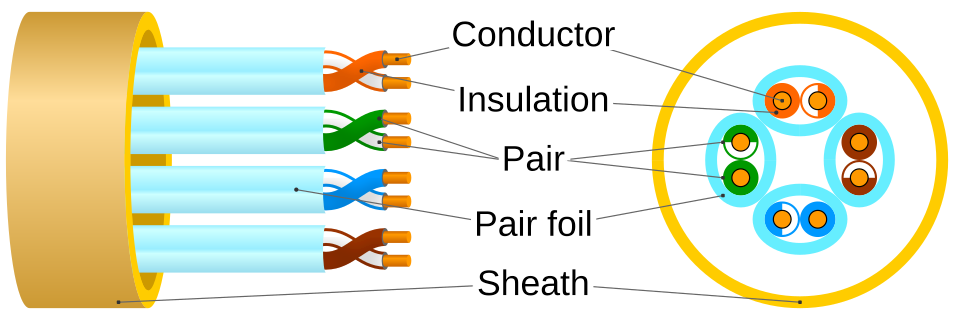
U/FTP
- 總遮蔽:無;線對遮蔽:每對鋁箔
- 抑制線對之間的串音(alien crosstalk)
- Cat6A 常見
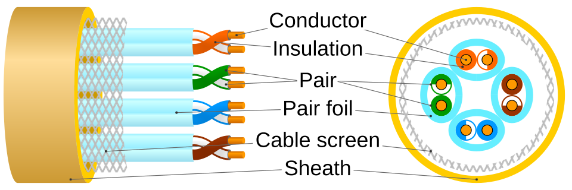
S/FTP
- 總遮蔽:編織網;線對遮蔽:每對鋁箔
- Cat7 / Cat7A / Cat8 典型結構,遮蔽最佳
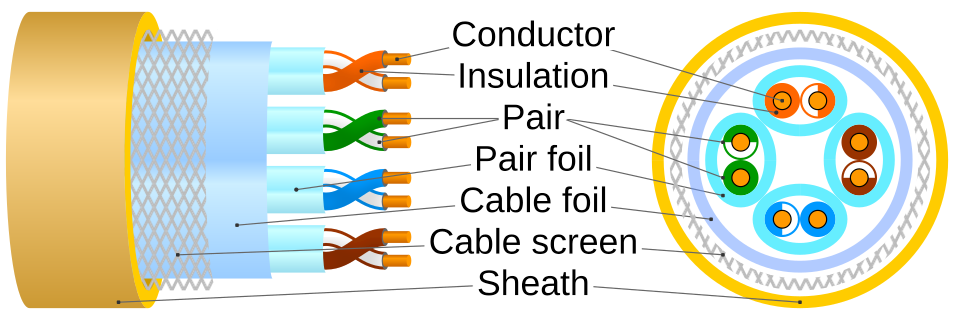
SF/FTP
- 總遮蔽:鋁箔 + 編織網(雙層);線對遮蔽:每對鋁箔
- 遮蔽最完整,線徑較粗、成本高
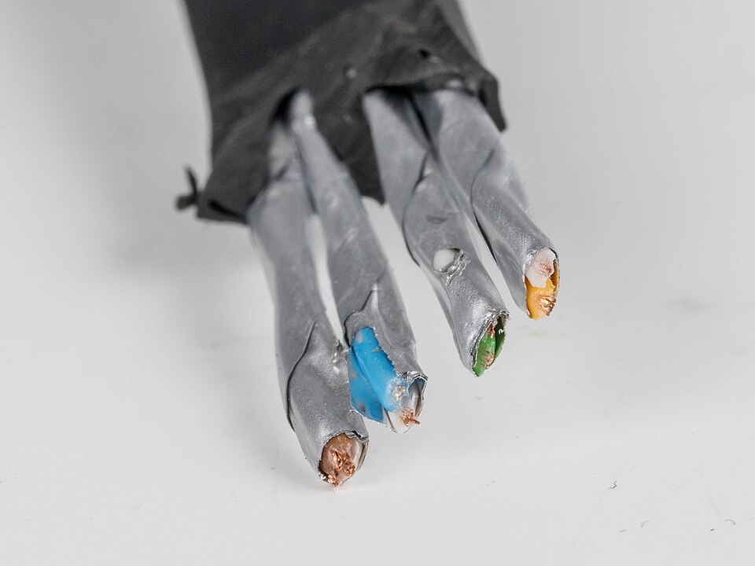
實物:Cat8 線材
- 剝開外被後可以看到每對線都有鋁箔
- Cat8 一律為遮蔽線(F/UTP 或 S/FTP)
其他組合:S/UTP(編織網總遮蔽、線對無遮蔽)、F/FTP(鋁箔總遮蔽 + 每對鋁箔,Cat6A / Cat7 常見)。
遮蔽線的接地要完整:兩端的遮蔽層要透過遮蔽式接頭 / 插座與 patch panel 接地,否則遮蔽層反而會變成天線,效果比 UTP 更差。
1.3 Category 等級(Cat5e / Cat6 / Cat6A / Cat7 / Cat8)
| 等級 | 頻寬 | 可支援的乙太網路 | 常見遮蔽 | 備註 |
|---|---|---|---|---|
| Cat5 | 100 MHz | 10/100BASE-T | U/UTP | 已淘汰 |
| Cat5e | 100 MHz | 1000BASE-T(100 m)、2.5GBASE-T / 5GBASE-T | U/UTP | 目前最低可接受的新設標準,Wi-Fi AP 常用 |
| Cat6 | 250 MHz | 1000BASE-T;10GBASE-T 僅約 37–55 m | U/UTP,常有十字骨架 | 線徑較粗,串音較低 |
| Cat6A(Augmented) | 500 MHz | 10GBASE-T 100 m | U/UTP 或 F/UTP、U/FTP | 新建案/資料中心銅纜首選 |
| Cat7(ISO Class F) | 600 MHz | 10GBASE-T | S/FTP | 非 TIA 正式標準;用 GG45 / TERA 接頭,也有 RJ45 相容跳線 |
| Cat7A(Class FA) | 1000 MHz | 10GBASE-T | S/FTP | 同上 |
| Cat8(8.1 / 8.2) | 2000 MHz | 25G / 40GBASE-T,最長 30 m | F/UTP 或 S/FTP(必為遮蔽) | 機櫃內 ToR 交換器到伺服器等短距離 |
速記:100 m 看 Cat5e(1G)/ Cat6A(10G);Cat6 跑 10G 只有幾十公尺;Cat8 速度最快但只有 30 m。
1.4 外被材質(Jacket Rating)
| 代號 | 名稱 | 用途 |
|---|---|---|
| CM / CMG | 一般(PVC) | 一般樓層內走線,非垂直貫穿 |
| CMR | Riser | 垂直管道(樓層間),防止火沿管道向上蔓延 |
| CMP | Plenum | 天花板上方回風空間(plenum),低煙低毒;使用 FEP 等材料,價格較高 |
| LSZH | Low Smoke Zero Halogen | 燃燒時低煙、不含鹵素,歐洲 / 隧道 / 船舶 / 資料中心常用 |
| 戶外型 / 直埋 | UV 防護、防水膠 | 戶外架空或管道,需加防雷突波保護 |
1.5 RJ45 接頭(8P8C)與 Pin 位置
乙太網路銅纜使用 8P8C 模組化接頭(俗稱 RJ45):8 個位置、8 個接點(8P8C)。
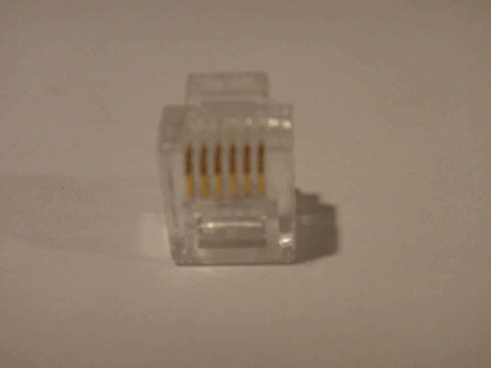
8P8C 公頭(RJ45 Plug)
- 8 個位置、8 個接點,下方有卡榫(彈片)可卡進插座
- 跳線的 RJ45 頭有「穿孔式」「帶分線套件(boot)」「遮蔽式(金屬外殼)」,要和線材遮蔽類型相符
- Cat6 / Cat6A 常搭配內置分線器(wire loader)的接頭,確保每對線位置固定
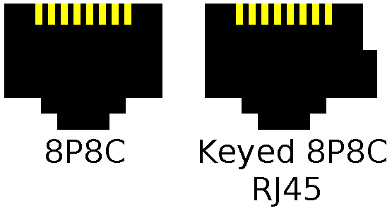
8P8C vs RJ45 vs RJ11
- 嚴格來說 RJ45 是電話業一種「有凸耳(keyed)」的規格;乙太網路用的是無凸耳的 8P8C,但業界已一律稱為 RJ45
- RJ11(6P2C / 6P4C)較小,用於電話線;外形相近但不能混插
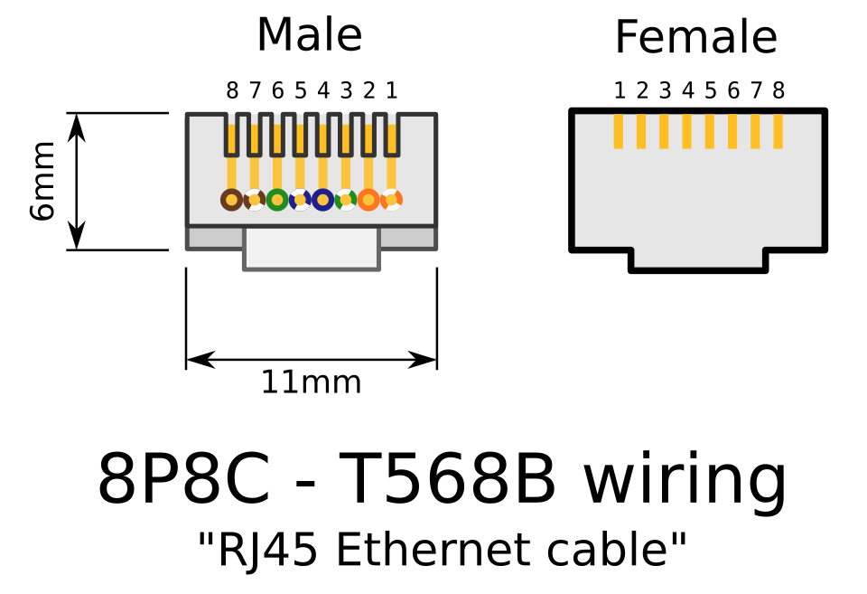
Pin 位置怎麼數
- 公頭金屬接點朝上、插入端朝前、卡榫在下方,從線尾往前看,最左邊是 Pin 1,最右邊是 Pin 8
- 公頭寬約 11 mm、高約 6 mm
- 插入母座後 Pin 1 對 Pin 1
1.6 T568A 與 T568B 色碼(必背)
兩者的差別只有「橘對與綠對互換位置」。台灣與北美最常用 T568B;同一條線兩端要用同一種(即直通線),不要混著做。
| Pin | T568B | T568A | 10/100 Mbps 用途 | 1G/10G 用途 |
|---|---|---|---|---|
| 1 | 白橘 | 白綠 | TX+ | BI_DA+ |
| 2 | 橘 | 綠 | TX− | BI_DA− |
| 3 | 白綠 | 白橘 | RX+ | BI_DB+ |
| 4 | 藍 | 藍 | (未使用) | BI_DC+ |
| 5 | 白藍 | 白藍 | (未使用) | BI_DC− |
| 6 | 綠 | 橘 | RX− | BI_DB− |
| 7 | 白棕 | 白棕 | (未使用) | BI_DD+ |
| 8 | 棕 | 棕 | (未使用) | BI_DD− |
記憶法:T568B = 橘、綠、藍、棕 的順序:白橘 橘 白綠 藍 白藍 綠 白棕 棕。
10/100 Mbps 只用 1、2、3、6 兩對;1000BASE-T 與 10GBASE-T 四對全用且雙向同時收發,所以任何一對損壞都可能造成「掉速到 100M」。
1.7 直通線、跨接線、反轉線(Rollover)
| 線型 | 兩端接法 | 用途 |
|---|---|---|
| 直通線 Straight-through | 兩端同為 T568B(或同為 T568A) | 不同類裝置之間:PC↔交換器、交換器↔路由器 |
| 跨接線 Crossover | 一端 T568A、另一端 T568B(1↔3、2↔6;Gigabit 版 4↔7、5↔8 也要交換) | 同類裝置:交換器↔交換器、PC↔PC(舊設備) |
| 反轉線 Rollover / Console | Pin 1↔8、2↔7、3↔6、4↔5…整條反向 | 接網路設備的 Console 口(RJ45→DB9 / USB) |
現代設備幾乎都支援 Auto-MDI/MDIX(自動偵測並調整收發腳位),所以實務上直通線可以通用,不太需要做跨接線;但考試仍會考,請熟記「同類用跨接、異類用直通」。
Console 預設參數:9600 baud、8 data bits、no parity、1 stop bit、no flow control(9600 8N1)。
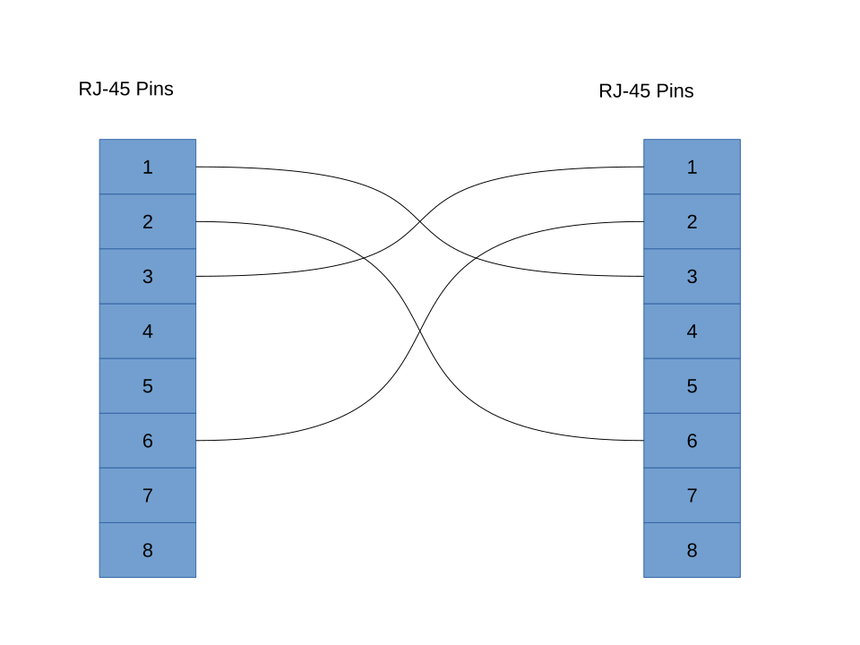
跨接線 Crossover
- 10/100 Mbps:Pin 1↔3、2↔6 交叉(TX 接對方 RX)
- Gigabit:另外 4↔7、5↔8 也要交換
- 用途:同類裝置互連(交換器↔交換器、PC↔PC)
- 現代設備有 Auto-MDIX,通常不需要特地做跨接線
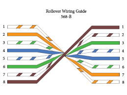
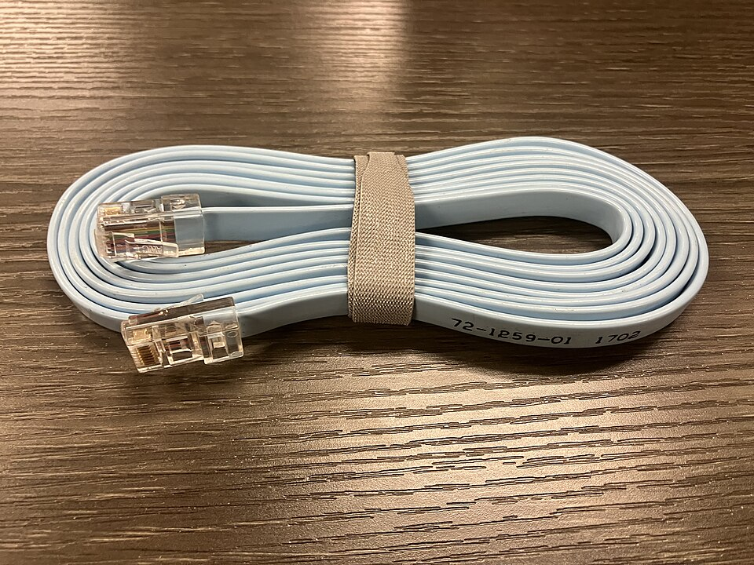
反轉線 Rollover(Console 線)
- Pin 1↔8、2↔7、3↔6、4↔5…整條線序反向
- 用於接網路設備的 Console 口(另一端 DB9 或 USB 轉接)
- Console 參數:9600 baud、8N1、no flow control
1.8 PoE(Power over Ethernet)簡述
讓網路線同時供電給 AP、IP Camera、VoIP 電話。PSE = 供電端(交換器 / PoE Injector);PD = 受電端。
| 標準 | 名稱 | PSE 輸出功率 | PD 可用功率 | 使用線對 |
|---|---|---|---|---|
| IEEE 802.3af | PoE(Type 1) | 15.4 W | 12.95 W | 2 對 |
| IEEE 802.3at | PoE+(Type 2) | 30 W | 25.5 W | 2 對 |
| IEEE 802.3bt | PoE++(Type 3) | 60 W | 51 W | 4 對 |
| IEEE 802.3bt | PoE++(Type 4) | 90–100 W | 71.3 W | 4 對 |
PoE 大電流會讓線材發熱:高瓦數建議使用 Cat6A / 純銅線(CCA 銅包鋁線不建議),並避免線束過度集中捆綁。
1.9 同軸電纜(Coaxial Cable)
結構由內而外:中心導體 → 絕緣介質(dielectric)→ 金屬遮蔽層(編織 / 鋁箔)→ 外被。訊號走中心導體,遮蔽層同時是回路與抗干擾屏障。
| 型號 | 阻抗 | 常見接頭 | 用途 |
|---|---|---|---|
| RG-6 | 75 Ω | F 型接頭 | 有線電視、寬頻數據機(DOCSIS)、衛星 |
| RG-59 | 75 Ω | F / BNC | CCTV、視訊(較短距離) |
| RG-58 | 50 Ω | BNC | 10BASE2「細同軸」乙太網路,單段最長 185 m;RF 實驗 |
| RG-8 / RG-213 | 50 Ω | N 型 / AUI 外接 | 10BASE5「粗同軸」,單段最長 500 m(吸血鬼夾 vampire tap) |
在現代網路中,同軸主要出現在電信 / 有線電視 HFC 網路、CCTV(AHD/HD-CVI)、天線與 RF 連接;區域網路早已改用雙絞線。
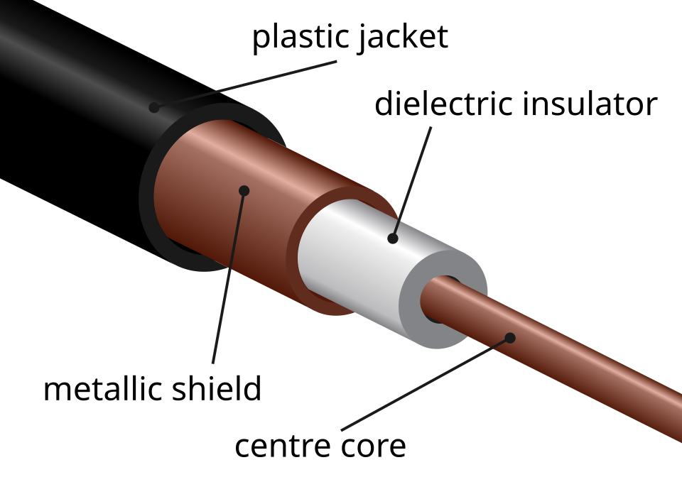
同軸電纜結構(由內而外)
- 中心導體(centre core):傳送訊號
- 絕緣介質(dielectric insulator):決定阻抗與衰減
- 金屬遮蔽層(metallic shield):編織銅網 / 鋁箔,同時是回路與抗干擾屏障
- 外被(plastic jacket):保護
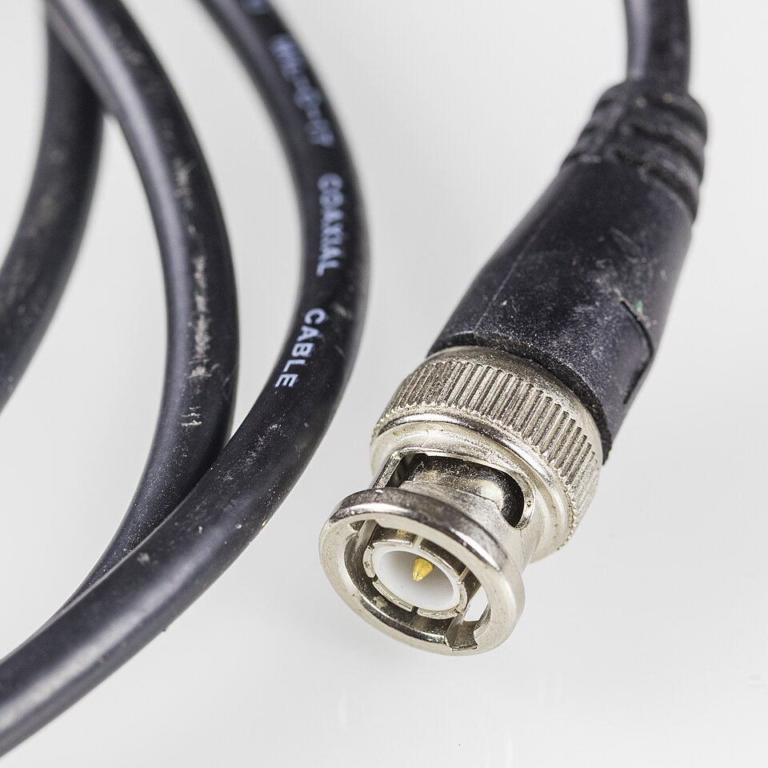
BNC 接頭(RG-58,50 Ω)
- 卡口式(bayonet),接上後轉一下即固定
- 用於 10BASE2 細同軸乙太網路(單段最長 185 m),需用 T 型接頭與 50 Ω 終端電阻
- 現在多見於 CCTV、測試儀器(示波器)、RF 設備
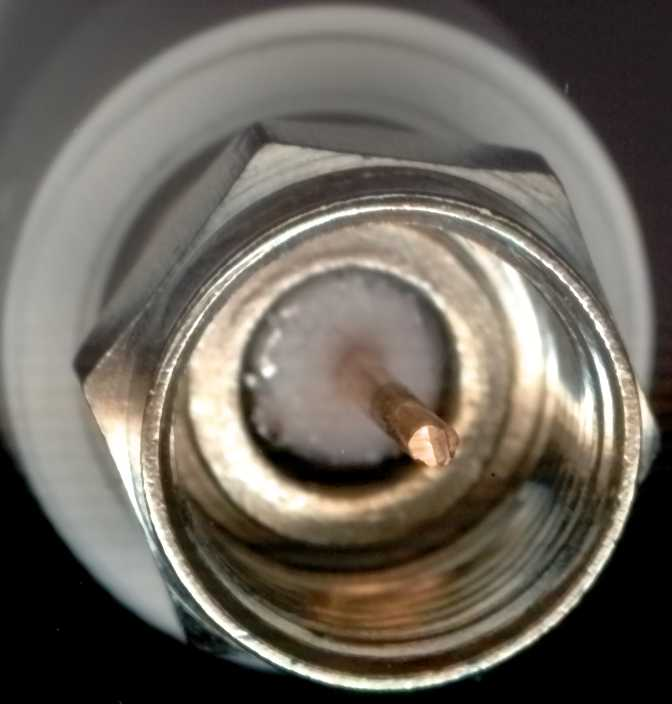
F 型接頭(RG-6,75 Ω)
- 螺紋鎖固,電纜的中心導體直接當接頭的針
- 用於有線電視、DOCSIS 寬頻數據機、衛星
1.10 Twinax / DAC(Direct Attach Copper)短距離高速銅纜
兩端直接做成 SFP+ / SFP28 / QSFP+ / QSFP28 模組外型的同軸雙芯(twinax)銅纜,用在機櫃內或相鄰機櫃的交換器 ↔ 伺服器 / 儲存設備。
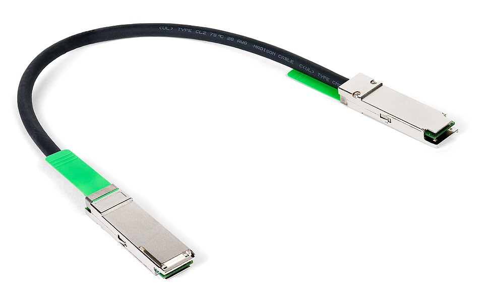
DAC(Direct Attach Copper)
- 優點:便宜、低延遲、低功耗(不需光電轉換)
- 缺點:距離短、線徑粗、彎折半徑大
- 被動式 DAC:約 1–5 m(視速率最長約 7 m);主動式 DAC:內有等化晶片,約 5–15 m
- AOC(Active Optical Cable):兩端含光模組、中間是光纖,約 3–100 m,較輕巧;是「光」不是銅,但外觀與 DAC 類似
- 部分廠牌交換器會鎖定原廠相容編碼,第三方 DAC / 光模組要確認相容性
1.11 配線硬體與工具
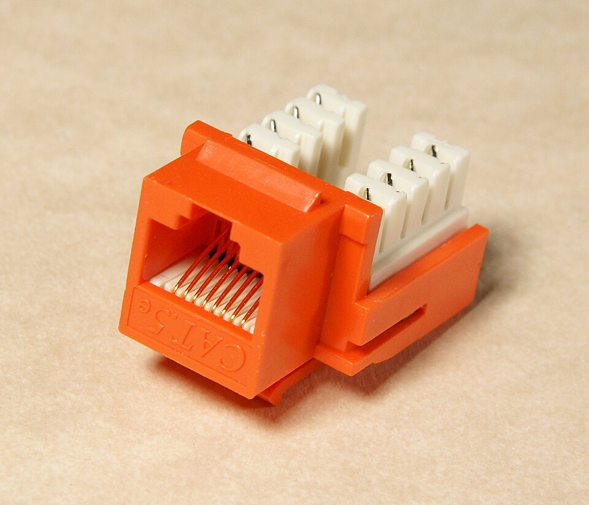
Keystone 模組 / 資訊插座
- 安裝在牆壁面板或 patch panel 的 RJ45 母座
- 後端用 110 打線端接實心線,色碼標示在模組上(T568A / B)
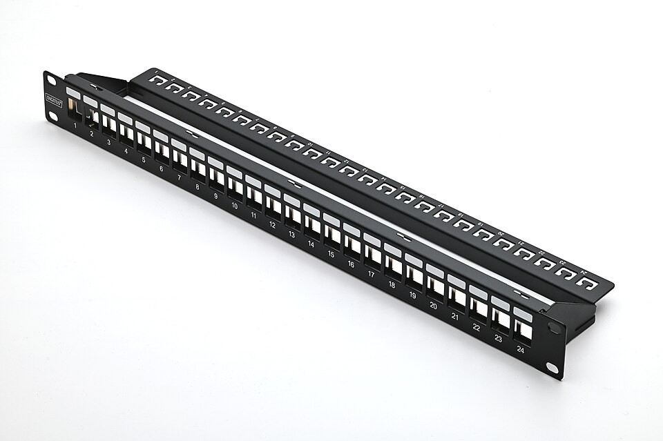
Patch Panel(配線架)
- 機櫃的 19 吋 / 1U 配線架,集中端接水平佈線
- 前面用跳線接交換器,後面是固定走線 → 換線不必動牆內線
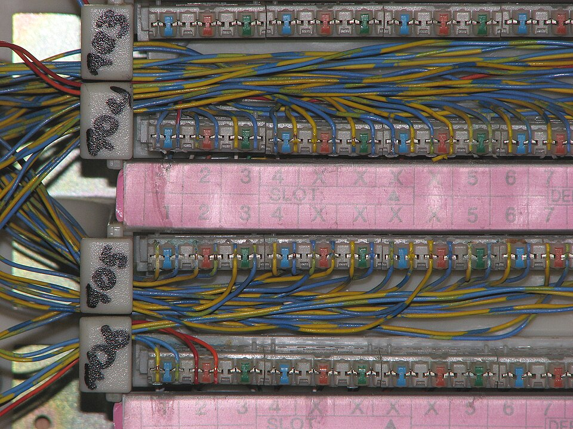
110 Block / Krone(打線塊)
- 以 punch-down(打線刀)把線壓入刀片式接點(IDC)
- 語音與數據配線皆用;可看到各對依顏色整齊排列
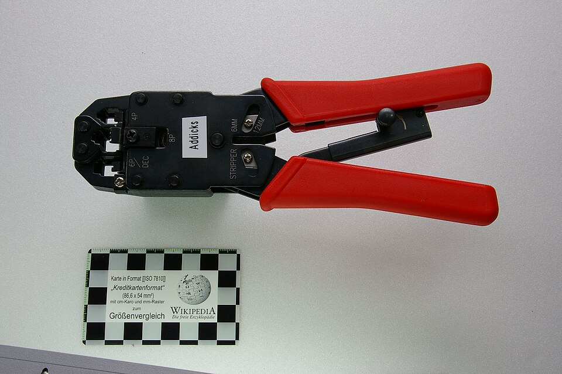
壓線鉗(Crimper)
- 用於製作 RJ45 跳線頭(圖中同時支援 RJ11 / RJ12)
- 另需剝線鉗與測線器
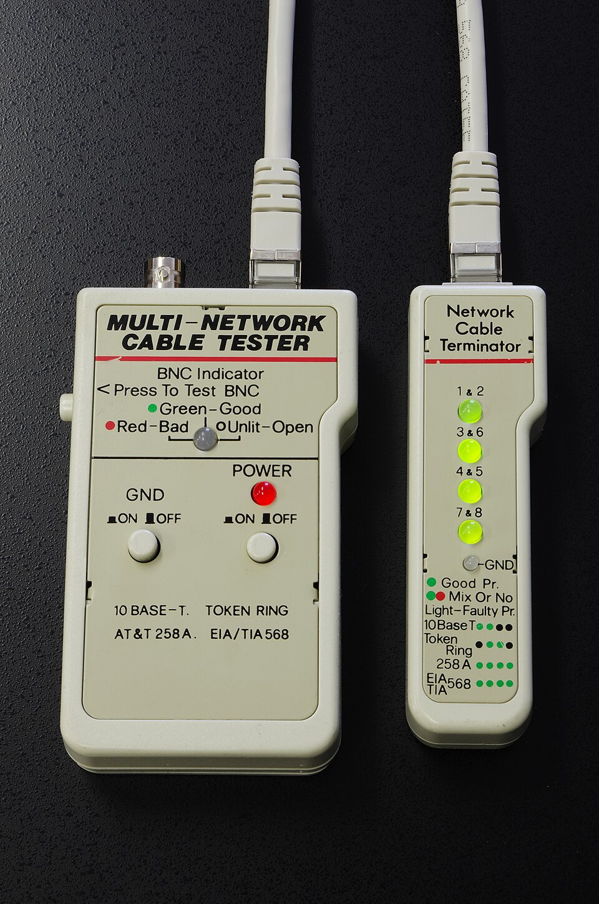
測線器(Cable Tester)
- 基本款:檢查通、斷、短路、錯線、跨線,把主機與遠端終端分別接在線的兩端
- 專業的認證測試儀(如 Fluke DSX)可量測衰減、NEXT、回返損耗(Return Loss)、長度、傳播延遲,並產出 TIA / ISO 認證報告
另:Toner / Probe(尋線器)可在機房一堆線中找出對應的那一條。
1.12 施工注意事項
- 長度:通道 ≤ 100 m;超過就要換光纖或加交換器。
- 解絞長度:端接時拆開線對越短越好(Cat5e / Cat6 一般 ≤ 13 mm),過度解絞會讓串音(NEXT)變差。
- 彎折半徑:UTP 靜態彎折 ≥ 4 倍外徑;拉線張力 ≤ 25 lbf(約 110 N),不可用力拉扯或用束線帶勒緊。
- 避開干擾源:與電力線、日光燈、馬達保持距離,必要時交叉不要平行貼靠。
- 不要把銅包鋁(CCA)當純銅線:電阻高、易斷,PoE 容易過熱,不符合 TIA / ISO 標準。
- 標示:兩端標籤、patch panel 編號、做好 as-built 配線圖。
2. 光纖(Optical Fiber)
2.1 原理:全反射
光纖用高折射率的纖芯(core)包在較低折射率的包層(cladding)裡,光以大於臨界角的角度射入,在兩者界面發生全內反射(Total Internal Reflection)而被「鎖」在纖芯裡前進。光不受電磁干擾、不會對外輻射,所以具備:高頻寬、長距離、低衰減、抗 EMI、電氣隔離(不引雷、不產生地迴路)、保密性較好。
缺點:接頭與熔接需要專業工具、端面怕髒、彎折過度會漏光、不能直接供電(PoE 不能走光纖)。
2.2 光纖結構(由內而外)
光纖玻璃本身(纖芯 + 包層)外徑固定為 125 µm(約人類頭髮的 1/2~1/3),所以不同類型的光纖只差在纖芯粗細(見下節)。
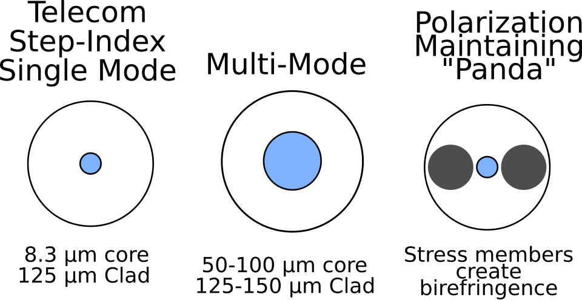
纖芯大小比較
- 單模(Single Mode):纖芯約 8.3–9 µm,包層 125 µm
- 多模(Multi-Mode):纖芯 50 µm 或 62.5 µm,包層 125 µm
- 保偏(Panda)光纖:特殊用途(雷射 / 感測),一般網路用不到
- 重點:包層永遠 125 µm,差別只在纖芯
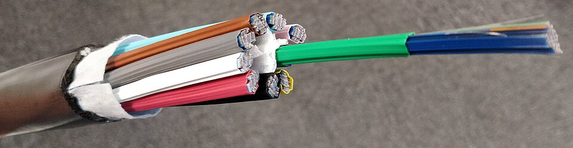
帶狀光纖 Ribbon 光纜
- 多條光纖並排成一條帶狀(常見 12 芯),再疊成光纜
- 高密度,適合骨幹、資料中心;可以一次熔接多芯(mass fusion)
- 與 MPO / MTP 多芯接頭搭配最常見
2.3 單模(SMF)vs 多模(MMF)
| 項目 | 單模 SMF | 多模 MMF |
|---|---|---|
| 纖芯直徑 | 約 9 µm(8.2–9) | 50 µm(OM2~OM5)或 62.5 µm(OM1) |
| 包層直徑 | 125 µm(兩者相同) | |
| 光源 | 雷射二極體(DFB / FP 雷射,成本高) | VCSEL(850 nm,便宜)或 LED |
| 常用波長 | 1310 nm、1550 nm | 850 nm、1300 nm |
| 傳輸距離 | 公里級(10 km、40 km、80 km 以上) | 數百公尺(OM4 常見 100~400 m) |
| 光模組 / 設備成本 | 光模組較貴,但纖本身便宜 | 光模組便宜,但 OM3 / OM4 光纖較貴 |
| 主要限制 | 色散(chromatic dispersion) | 模態色散(modal dispersion)決定最大距離 |
| 外被顏色 | 黃色(OS1/OS2) | 橘(OM1/OM2)、水藍 Aqua(OM3/OM4)、萊姆綠(OM5) |
| 典型使用 | 校園骨幹、城際、電信 FTTH、長距離資料中心互連 | 機房內、樓內垂直幹線、資料中心短距離 |
⚠️ 單模與多模不可混接。用單模模組配多模光纖 / 反過來,有時「看起來會亮燈」但損耗與 BER 極高。永遠先確認模組類型、光纖類型、波長、距離四項是否一致。
2.4 光纖等級:OM1~OM5、OS1/OS2 與外被顏色
ISO/IEC 11801 的命名:OM = Optical Multimode,OS = Optical Single-mode。
| 等級 | 纖芯 | 建議外被顏色 | 10G(10GBASE-SR) | 40/100G(SR4) | 備註 |
|---|---|---|---|---|---|
| OM1 | 62.5/125 µm | 橘色 | 約 33 m | — | LED 光源,1G 最遠 275 m,已淘汰 |
| OM2 | 50/125 µm | 橘色 | 約 82 m | — | 1G 最遠 550 m |
| OM3 | 50/125 µm(雷射最佳化) | 水藍 Aqua | 300 m | 40G:100 m 100G:70 m | VCSEL 專用,10G 起的主流 |
| OM4 | 50/125 µm(更高頻寬) | 水藍(部分品牌為紫紅 Erika Violet) | 400 m | 40G:150 m 100G:100 m | 目前資料中心多模最常見 |
| OM5(WBMMF) | 50/125 µm(寬頻 850–953 nm) | 萊姆綠 Lime | 400 m | 支援 SWDM(多波長多工),用 2 芯達成 40/100G | 與 OM4 同尺寸、向下相容 |
| OS1 | 9/125 µm | 黃色 | 室內緊套光纖,衰減 ≤ 1.0 dB/km | 樓內單模 | |
| OS2 | 9/125 µm | 黃色 | 室外鬆套管光纜,衰減 ≤ 0.4 dB/km | 室外骨幹、電信、長距離 | |
表中距離為 IEEE 標準「典型最大值」,實際以光模組規格書與線纜衰減為準。外被顏色為 TIA-598 / ISO 11801 建議值,不同廠牌可能有差異,以標示文字(線上印字)為準。
2.5 波長與衰減(Attenuation)
| 光纖 | 波長 | 典型衰減 | 說明 |
|---|---|---|---|
| MMF | 850 nm | 約 3.0 dB/km | VCSEL 光源,第一視窗 |
| MMF | 1300 nm | 約 1.0 dB/km | 較少用 |
| SMF | 1310 nm | 約 0.35 dB/km | 第二視窗,色散最小,10G-LR / 1000BASE-LX |
| SMF | 1550 nm | 約 0.20 dB/km | 第三視窗,衰減最低,長距離(ER / ZR)與 DWDM |
衰減單位 dB(對數):每損失 3 dB ≈ 損失一半光功率;光功率單位 dBm(以 1 mW 為 0 dBm)。
2.6 光纖連接器(Connectors)
必須能辨認 ST、SC、FC、LC、MTP/MPO 五種。下面每種接頭都是「圖 + 說明並排」,先看外型、再讀特徵。
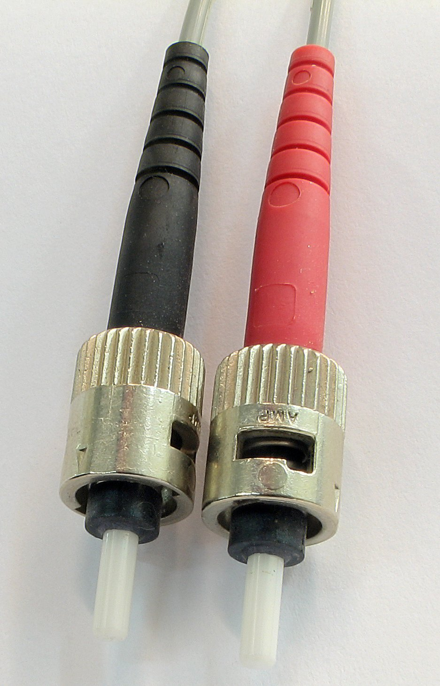
ST(Straight Tip)
- 外觀:圓柱形,外圈有金屬環,環上有凹槽
- 鎖固:卡扣式(bayonet)──插入後旋轉卡進凹槽(像舊式相機鏡頭)
- 插芯:2.5 mm
- 場景:早期多模光纖、校園舊佈線、工業現場
- 辨識口訣:圓的 + 要轉 = ST
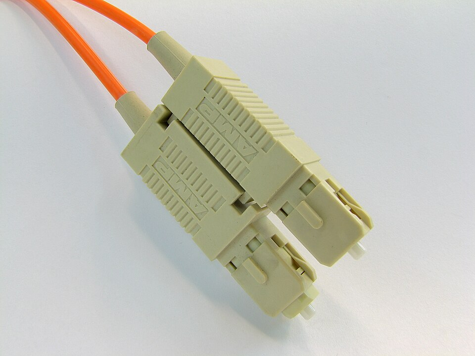
SC(Subscriber / Square / Standard)
- 外觀:方形塑膠外殼,兩條可用夾子併成雙芯
- 鎖固:推拉式(push-pull)──直接推入「喀」一聲定位,拉外殼即可拔出
- 插芯:2.5 mm
- 場景:電信、FTTH / GPON 光纖到府、舊式交換器與 GBIC;單模多為 SC/APC(綠色)
- 辨識口訣:方的 + 直接推 = SC
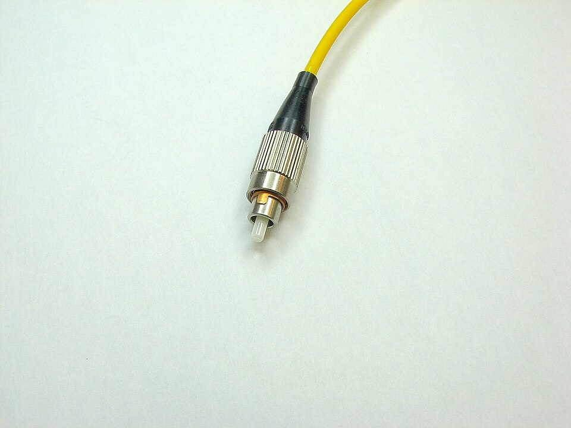
FC(Ferrule Connector)
- 外觀:金屬外殼、滾花螺帽,螺帽旁常有定位鍵(key)
- 鎖固:螺紋鎖固,抗震、連接穩固
- 插芯:2.5 mm
- 場景:測試儀器(OTDR、光功率計、光源)、電信設備、實驗室;資料網路設備上較少見
- 辨識口訣:金屬 + 螺帽 = FC
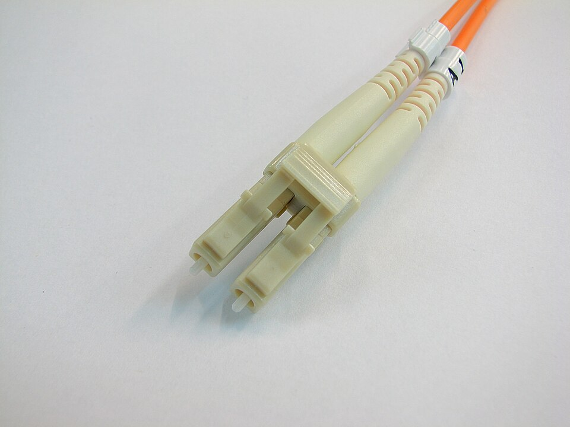
LC(Lucent / Little Connector)
- 外觀:小型方形,外型像迷你 RJ45,常以雙芯夾併成 duplex
- 鎖固:彈片卡榫,按下彈片拔出
- 插芯:1.25 mm(約為 SC / ST / FC 的一半 → 密度可加倍)
- 場景:資料中心與 SFP / SFP+ / QSFP 光模組的標準接頭,目前最常見
- 辨識口訣:小的 + 有彈片 = LC
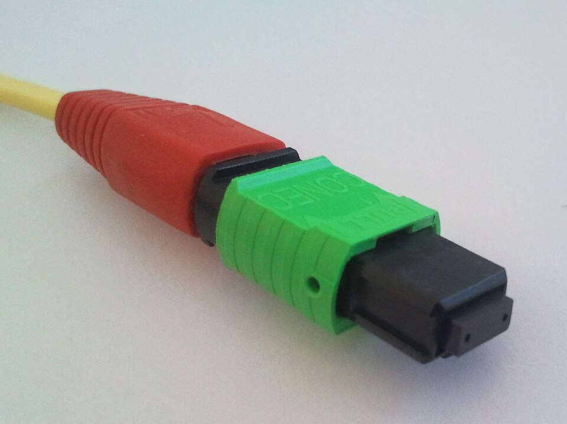
MTP / MPO(Multi-fiber Push On)
- 外觀:矩形、一個接頭含 8 / 12 / 16 / 24 芯,前端有 MT 插芯與兩個導針孔
- 鎖固:推拉式,並以導針(guide pin)精準對位
- 公母:公頭(male)有導針、母頭(female)無導針,兩者才能對接
- 場景:40G / 100G SR4、高密度主幹、預端接(pre-terminated)光纜
- 注意:要確認極性(Polarity A/B/C)、公母、芯數與端面(UPC/APC)
大小與外形並排比較
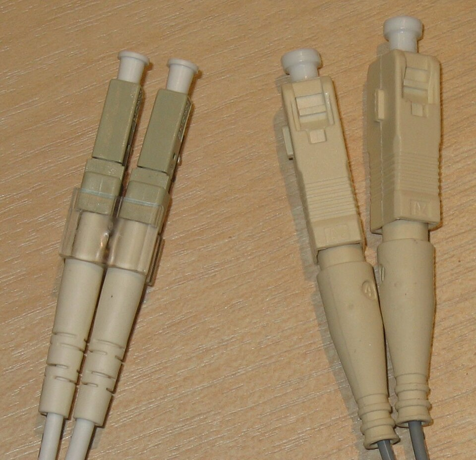
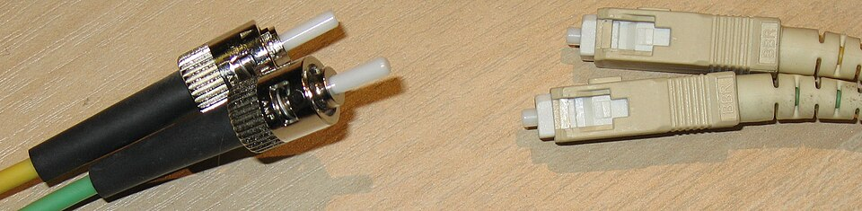
| 接頭 | 形狀 | 鎖固方式 | 插芯 | 最常見場景 |
|---|---|---|---|---|
| ST | 圓形 | 旋轉卡扣 | 2.5 mm | 舊多模佈線 |
| SC | 方形 | 推拉 | 2.5 mm | 電信、FTTH、舊設備 |
| FC | 圓形、金屬 | 螺紋 | 2.5 mm | 測試儀器、電信 |
| LC | 小型方形 | 彈片卡榫 | 1.25 mm | 資料中心 / SFP 模組 |
| MTP/MPO | 矩形多芯 | 推拉 + 導針 | MT 插芯(8–24 芯) | 40G / 100G SR4 |
其他:E2000(歐洲電信 / 實驗室,自帶防塵蓋)、MU(迷你 SC)、MT-RJ(舊式雙芯小型接頭)。
連接器類型 ≠ 光纖類型 ≠ 端面研磨類型,三者互相獨立。完整規格像 LC/UPC – SC/UPC 單模 9/125 雙芯 OS2 3 m,要一次講清楚。
2.7 端面研磨:PC / UPC / APC(重要!)
光纖接頭的陶瓷插芯端面有不同的研磨形狀,目的是降低回返損耗(Return Loss, RL):光在接點的反射會回到雷射造成雜訊。
| 類型 | 端面 | 顏色(接頭 / 防塵蓋) | 回返損耗 | 用途 |
|---|---|---|---|---|
| PC | 微凸圓弧 | 多為黑 / 米色 | 約 ≥ 30 dB | 早期使用 |
| UPC | 更平滑的凸面(Ultra PC) | 藍色 | 約 ≥ 50 dB | 一般資料網路、乙太網路光模組(LC/UPC) |
| APC | 8° 斜角研磨(Angled PC) | 綠色 | 約 ≥ 60 dB | FTTH / GPON、CATV(RF Overlay)、DWDM、高精密測試 |
⚠️ UPC 與 APC 不可互插。斜角面對平面接不到位,會有明顯損耗、也可能刮傷插芯。記口訣:綠色斜角(APC)、藍色平面(UPC)。
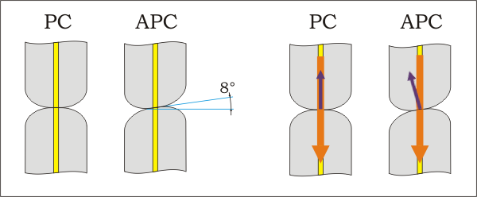
PC 與 APC 的差異
- PC / UPC:端面接近垂直,光在接點的反射會沿原路回到雷射,產生雜訊
- APC:端面磨成 8° 斜角,反射光折進包層被吸收,回返損耗高(≥ 60 dB)
- 所以 FTTH / CATV / DWDM 這類對反射敏感的系統用 APC
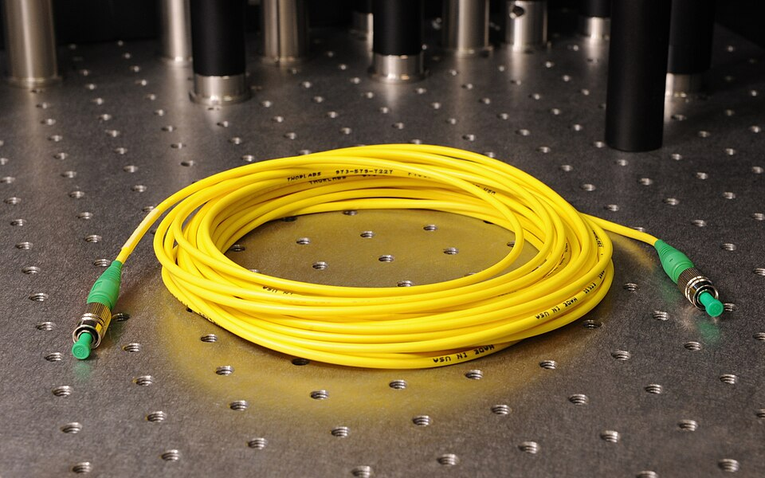
實物:FC/APC 跳線
- 黃色外被 = 單模、綠色接頭 = APC
- 兩端皆為 FC/APC,常用於測試儀器與光學實驗
- APC 只能接 APC,不可與藍色 UPC 互插
2.8 Simplex、Duplex、BiDi 與極性(Polarity)
- Simplex(單芯):1 條光纖;Duplex(雙芯):2 條光纖(一條 Tx 發、一條 Rx 收),這是最常見的乙太網路光連結。
- 極性(Polarity):A 端的 Tx 必須對到 B 端的 Rx。若兩條光纖接反(Tx↔Tx、Rx↔Rx),光模組亮燈但鏈路不起來。常見處置:把一端的 LC duplex 光纖對調(flip)。
- BiDi(單纖雙向)模組:只用 1 條光纖,兩端用不同波長(如 1310 / 1490 / 1550 nm)分別傳送與接收,必須成對使用(A 端搭配 B 端的模組),可節省一半光纖。
- MPO 極性:Method A(直通)、B(反轉,40/100G SR4 最常用)、C(成對反轉)。選購 MPO 線要注意 male/female + 極性 + 光纖數量(8/12/24)。
2.9 光模組(Transceiver)與 DAC / AOC
光模組把交換器的電訊號轉成光訊號(與反向),插在設備的熱插拔(hot-swappable)插槽,是 L1 的核心元件。
| 外型 | 速率 | 典型光介面 | 常見光學接頭 |
|---|---|---|---|
| SFP | 100M / 1G(最高約 4G) | 1000BASE-SX / LX / LX10 / EX / ZX / BX | LC 雙芯(BiDi 為單芯) |
| SFP+ | 10G | 10GBASE-SR / LR / ER / ZR、DAC | LC 雙芯 |
| SFP28 | 25G | 25GBASE-SR / LR | LC 雙芯 |
| QSFP+ | 40G(4×10G) | 40GBASE-SR4 / LR4 | SR4:MPO-12;LR4:LC 雙芯 |
| QSFP28 | 100G(4×25G) | 100GBASE-SR4 / LR4 / CWDM4 | SR4:MPO-12;LR4:LC 雙芯 |
| QSFP-DD / OSFP | 400G / 800G | 400GBASE-SR8 / DR4 / FR4 / LR4 | MPO-16 / LC |
型號代號:SR = Short Reach(多模 850 nm);LR = Long Reach(單模 1310 nm,10 km);ER = Extended Reach(1550 nm,40 km);ZR = 80 km;SX / LX 是 1G 的對應命名;BX = BiDi;DR / FR 等為 400G 新命名。

SFP:1G 光模組
- 圖為 1000BASE-SX,850 nm 多模,前端兩個孔(Tx / Rx)接 LC 雙芯
- 標籤上會寫速率、光纖類型、波長與距離
- 金屬外殼、拉環(bail)用來鎖定與拔出
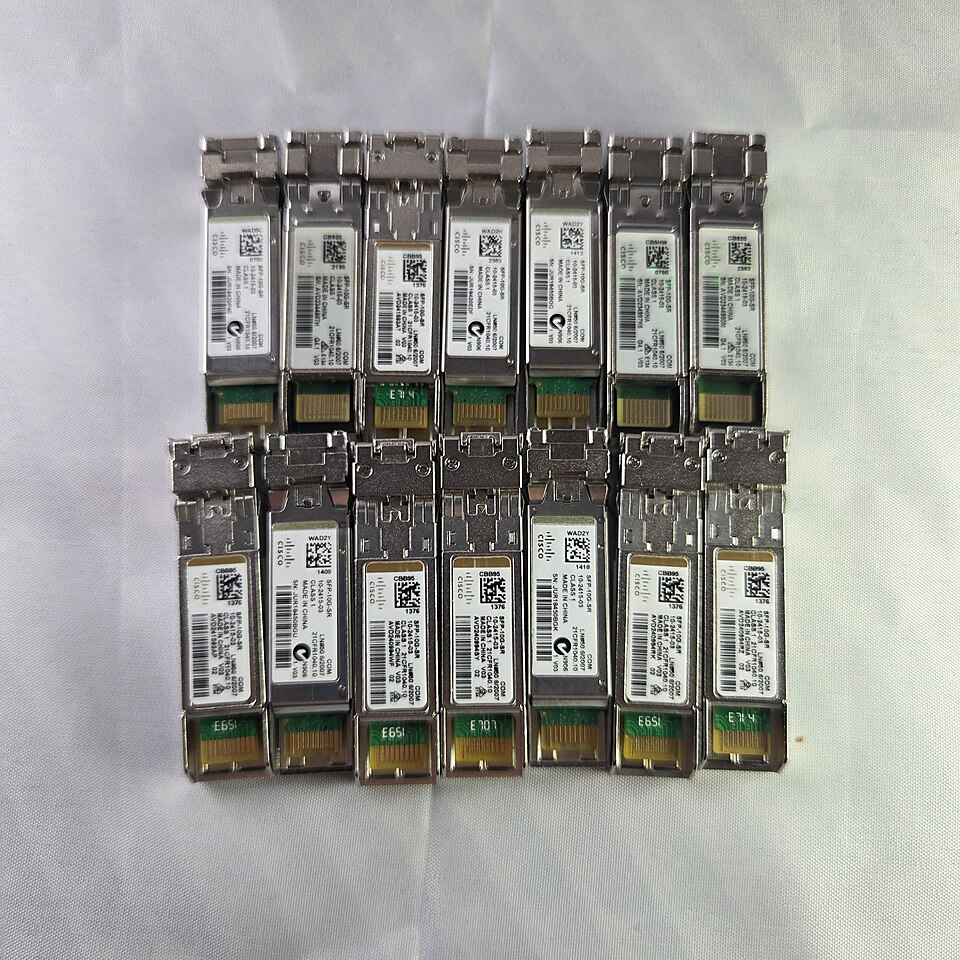
SFP+:10G 光模組
- 外型與 SFP 幾乎相同,但速率 10G、編碼不同
- 圖為 10GBASE-SR(850 nm 多模,OM3 300 m / OM4 400 m)
- SFP+ 與 SFP 外型相同但速率與編碼不同,SFP 插槽不能用 SFP+ 跑 10G;SFP+ 插槽是否相容 1G 模組視設備而定
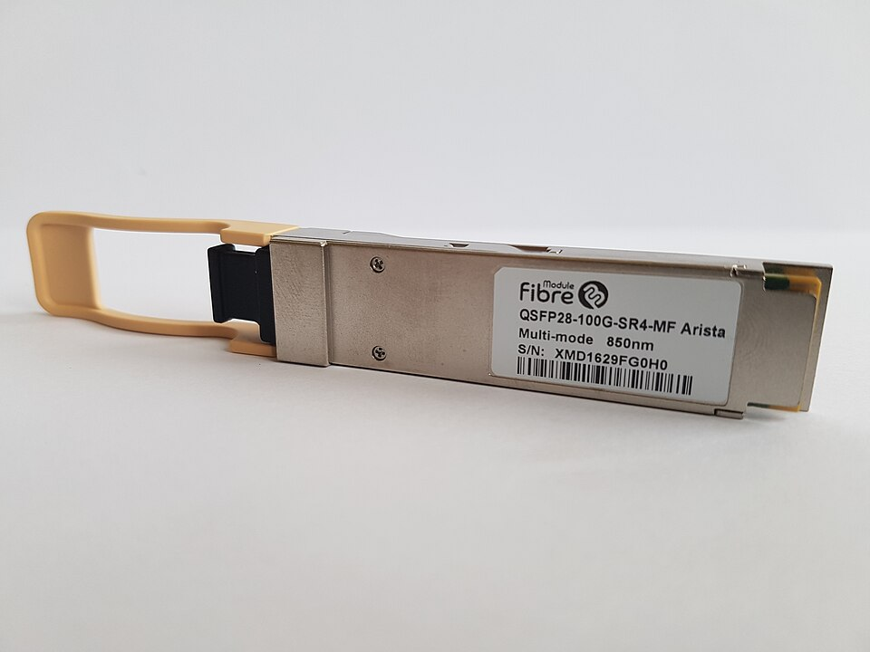
QSFP28 SR4:100G 多模
- 4 × 25G,850 nm 多模,用 MPO-12(8 芯)
- OM3 70 m / OM4 100 m
- 橘黃色拉環只是模組的拉環顏色,不代表光纖類型
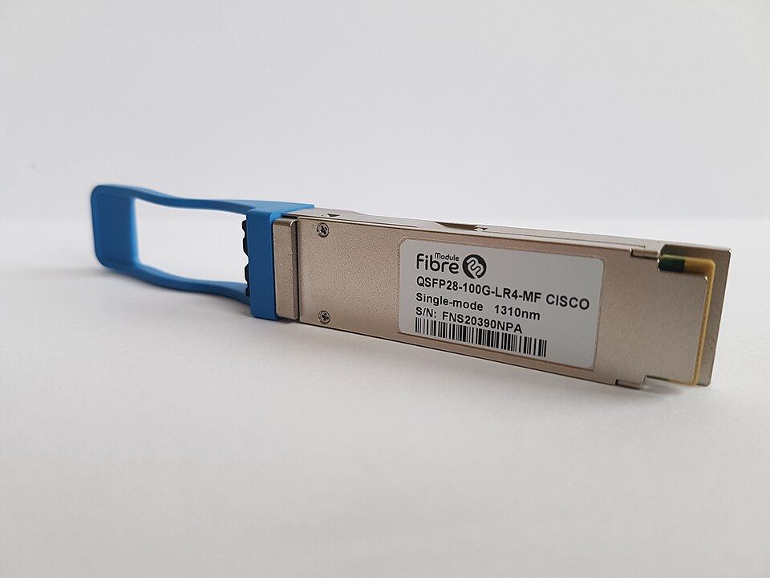
QSFP28 LR4:100G 單模
- 4 個波長(LAN-WDM)合在 1 對光纖,用 LC 雙芯
- 單模 10 km
- 與 SR4 外型相近,務必看標籤分辨
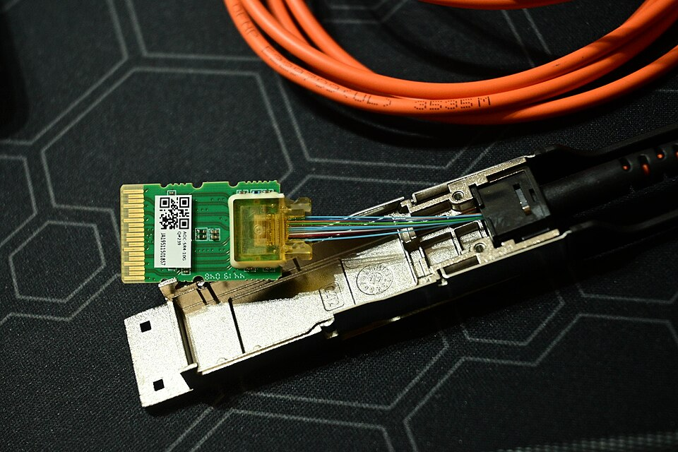
拆開看內部
- 內部是電路板 + 雷射發射組件 + 接收組件 + 控制晶片
- 電訊號 ⇄ 光訊號轉換就在這裡完成
- 也說明為什麼光模組怕髒、怕靜電、要小心拔插
光模組都有 DOM / DDM(Digital Optical Monitoring),可在 CLI 查詢 溫度、供電電壓、Tx 功率、Rx 功率、偏壓電流(例如 Cisco:show interfaces transceiver detail)。Rx 功率偏低 → 髒污 / 彎折 / 距離過長;過高 → 需加光衰減器(attenuator)。
2.10 乙太網路光纖標準對照(必背)
| 標準 | 速率 | 波長 / 介質 | 最遠距離 | 接頭 |
|---|---|---|---|---|
| 100BASE-FX | 100M | 1310 nm MMF | 2 km | SC / LC |
| 1000BASE-SX | 1G | 850 nm MMF | OM1 275 m / OM2 550 m | LC |
| 1000BASE-LX | 1G | 1310 nm SMF(亦可 MMF 550 m) | 5 km(LX10 為 10 km) | LC |
| 1000BASE-ZX(非 IEEE) | 1G | 1550 nm SMF | 約 70–80 km | LC |
| 10GBASE-SR | 10G | 850 nm MMF | OM3 300 m / OM4 400 m | LC |
| 10GBASE-LR | 10G | 1310 nm SMF | 10 km | LC |
| 10GBASE-ER | 10G | 1550 nm SMF | 40 km | LC |
| 10GBASE-ZR(非 IEEE) | 10G | 1550 nm SMF | 80 km | LC |
| 25GBASE-SR | 25G | 850 nm MMF | OM3 70 m / OM4 100 m | LC |
| 40GBASE-SR4 | 40G | 850 nm MMF,4 對光纖 | OM3 100 m / OM4 150 m | MPO-12(用 8 芯) |
| 40GBASE-LR4 | 40G | 1310 nm CWDM 4 波,SMF | 10 km | LC |
| 100GBASE-SR4 | 100G | 850 nm MMF,4×25G | OM3 70 m / OM4 100 m | MPO-12 |
| 100GBASE-LR4 / ER4 | 100G | 1310 nm LAN-WDM 4 波,SMF | 10 km / 40 km | LC |
2.11 熔接與現場端接
| 方式 | 原理 | 典型損耗 | 備註 |
|---|---|---|---|
| 熔接 Fusion Splice | 以電弧把兩段光纖熔在一起,對準後加熱熔合 | 0.02–0.1 dB | 損耗最小、最可靠;需熔接機(含光纖切割刀、剝線鉗) |
| 機械式接續 Mechanical Splice | 以精密 V 槽 + 折射率匹配膠對接 | 約 0.2–0.5 dB | 無需熔接機,但損耗較高,常用於臨時 / 搶修 |
| Pigtail 熔接法 | 在光纖盤(ODF)內把「一端已做好接頭的短纖(pigtail)」熔到光纜纖芯上 | 連接器損耗 + 熔接約 0.1 dB | 現場端接最主流作法,品質最好 |
| 現場組裝接頭(Field-install connector) | 用組裝式接頭直接做在光纖上 | 約 0.3–0.75 dB | 少量或救急使用 |
每個配對的接頭(mated pair)典型損耗 0.2–0.5 dB,TIA 標準容許最大 0.75 dB。
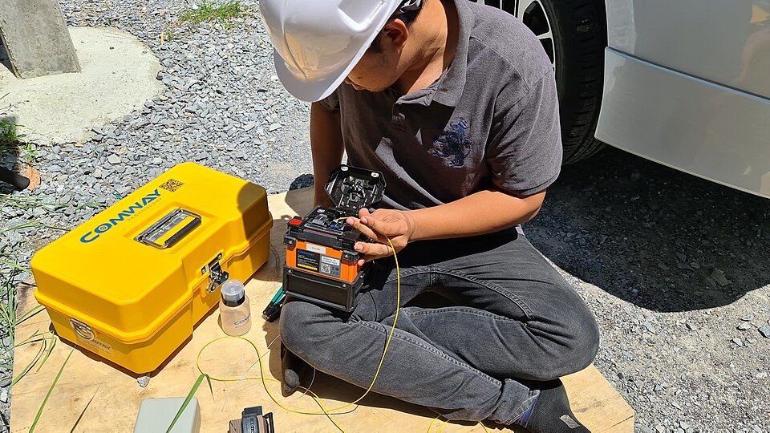
熔接機現場作業
- 流程:剝除塗覆層 → 酒精擦拭 → 光纖切割刀切平 → 放入熔接機 → 自動對準 → 電弧熔接 → 套熱縮護套加熱
- 切割面品質決定熔接損耗,切割刀是關鍵工具
- 熔接完成後放入接續盤(splice tray)保護
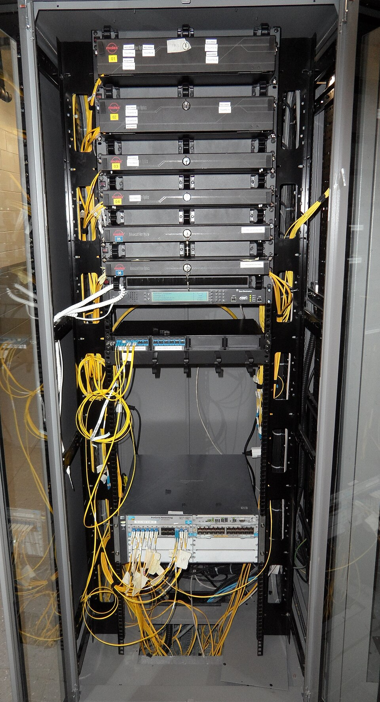
光纖配線架(ODF)與跳線
- ODF(Optical Distribution Frame)內以 pigtail 熔接光纜,前面用 LC / SC 跳線接交換器
- 黃色跳線 = 單模;注意整理線材、保持彎曲半徑
- 每個埠都要有標籤,日後排障才找得到
2.12 損耗預算(Loss Budget)
要小於光模組的「功率預算(Tx 最小輸出 − Rx 靈敏度)」或標準的「最大通道插入損耗」,且接收功率不能超過 Rx 過載點。
範例:10GBASE-LR,10 km 單模(1310 nm)
- 光纖:10 km × 0.4 dB/km = 4.0 dB(OS2 規格上限)
- 接頭:2 對(配線架兩端)× 0.5 dB = 1.0 dB
- 熔接:1 點 × 0.1 dB = 0.1 dB
- 合計:5.1 dB ≤ 標準通道插入損耗上限約 6.2 dB → 可通過,剩約 1.1 dB 餘裕
實務上:如果距離很短(例如 LR 模組接 100 m 單模),光功率過強可能超過 Rx 過載,需加 5–10 dB 光衰減器。
2.13 光纖測試工具
| 工具 | 用途 |
|---|---|
| VFL 目視故障定位器 | 發出可見紅光(約 650 nm),看出斷點、重度彎折、極性;只適合短距離(數公里內) |
| 光功率計(Power Meter)+ 光源(Light Source) | 量測整條鏈路的端到端損耗(dB),是損耗驗收的基本方式 |
| OTDR(光時域反射儀) | 從一端發脈衝,依回波畫出距離—損耗曲線,可找出熔接點、接頭、彎折與斷點的位置;需要發射光纖(launch cable)來避開盲區 |
| 光纖檢查顯微鏡(Inspection Scope) | 接上前先檢查端面是否有污染與刮傷(IEC 61300-3-35) |
| 清潔工具 | 一鍵式清潔筆(One-click cleaner)、無塵乾 / 濕擦拭紙、清潔卡帶;先乾擦,必要時再濕擦 |
| 剝纖鉗 / 光纖切割刀 | 熔接前處理纖芯;切割面品質決定熔接損耗 |
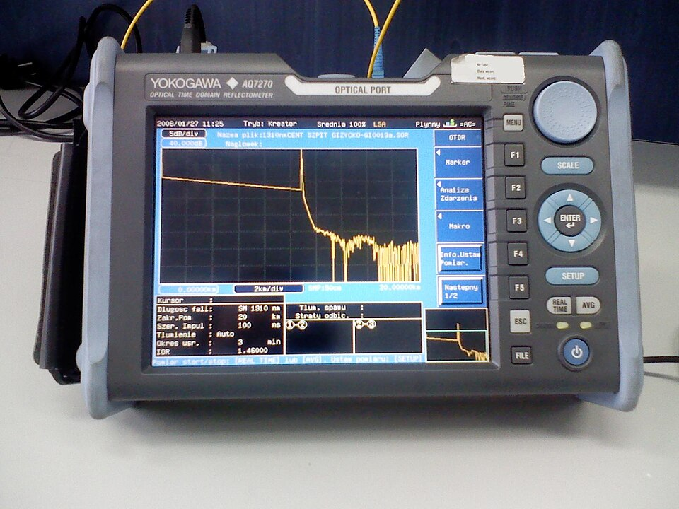
OTDR(光時域反射儀)
- 從光纖一端發脈衝,依反射回來的光畫出距離—損耗曲線
- 可看出熔接點、接頭、彎折與斷點的位置(曲線的階梯與尖峰)
- 需要發射光纖(launch cable)避開近端盲區
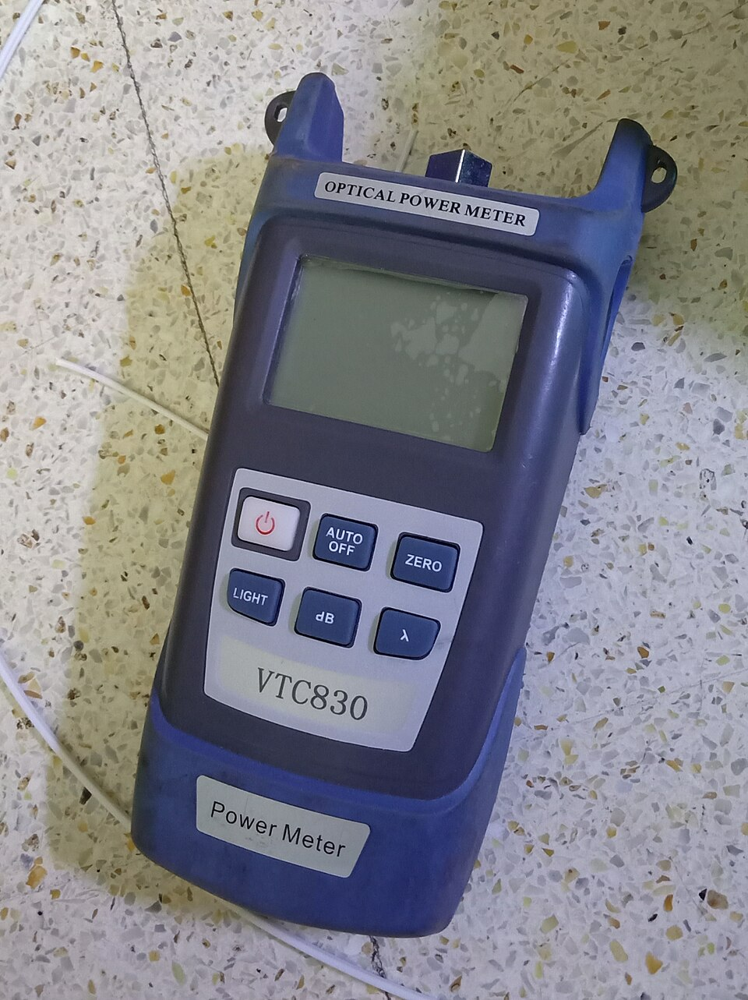
光功率計(Power Meter)
- 量測光功率(dBm);搭配光源量整條鏈路的端到端損耗(dB)
- 損耗驗收的基本方式;也可用來確認光模組 Tx 輸出
- 使用前要選對波長(850 / 1310 / 1550 nm)並校零
2.14 清潔與安全
- 髒污是光纖鏈路故障的第一名原因。口訣:「Inspect Before You Connect」(連接前先檢查),不要用手、嘴、衣服擦端面,不要用壓縮空氣罐直接噴(會有油霧)。
- 備用的接頭一定戴防塵蓋;光模組沒插線時也要裝防塵塞。
- 雷射安全:1310 / 1550 nm 為不可見紅外光;絕不直視光纖端面或模組光孔,尤其不可用放大鏡 / 顯微鏡直視正在發光的光纖(請使用有濾光保護的檢查鏡,或先斷電)。
- 彎折半徑:一般光纜最小彎曲半徑約為外徑的 10 倍(無張力)/ 20 倍(受拉);跳線常用 G.657 彎曲不敏感光纖,可忍受更小半徑,但仍避免打折。
- 斷裂的玻璃光纖碎片像針,要用膠帶收集,不可徒手撿。
3. 銅纜 vs 光纖 比較與選型
| 項目 | 銅纜(UTP) | 多模光纖(MMF) | 單模光纖(SMF) |
|---|---|---|---|
| 最大距離 | 100 m | ~550 m(1G) 100–400 m(10G+) | 10 km ~ 80 km 以上 |
| 頻寬潛力 | ~10G(Cat6A)/ 25–40G(Cat8, 30 m) | 10G ~ 400G | 最高,可達 Tbps(WDM) |
| EMI 抗干擾 | 差(UTP)~ 好(遮蔽) | 免疫 | 免疫 |
| 是否可供電 | ✅ PoE | ❌ | ❌ |
| 成本(線 + 介面) | 低 | 中(光模組便宜) | 中高(光模組較貴) |
| 施工難度 | 低(打線 / 壓線) | 中(需端面管理) | 中高(熔接、OTDR) |
| 電氣隔離 / 防雷 | 需接地與突波保護 | ✅ 無導電 | ✅ 無導電 |
| 典型場景 | 桌面、AP、IP Cam、機櫃內 | 機房、樓內垂直、短距離互連 | 校園、跨樓、電信、長距離 |
選型速查(由情境推荐)
- 辦公桌 / AP / IP 攝影機 / PoE 設備(≤ 90 m)→ Cat6A 或至少 Cat5e UTP
- 機櫃內交換器到伺服器(1–3 m,10/25G)→ DAC;40/100G 短距 → DAC 或 AOC
- 機房列間(10–100 m)→ OM4 + SR 光模組(LC / MPO)
- 跨樓 / 跨校區(100 m ~ 10 km)→ OS2 單模 + LR 光模組(LC/UPC)
- FTTH / PON → SC/APC(綠色)
- 電磁干擾嚴重或需電氣隔離的工廠環境 → 光纖或 F/UTP / S/FTP 遮蔽銅纜
4. 第一層故障排除速查
排障原則:先 L1。看實體介面燈號→ 看 CLI 介面狀態與錯誤計數 → 換線 / 換模組 / 換埠交叉驗證。
| 現象 | 常見原因 | 處置 |
|---|---|---|
介面 down / down,燈不亮 | 線斷、沒接好、對端關閉、光纖極性接反、模組不相容 | 換線 / 換埠 / 對調光纖 Tx-Rx;確認模組相容性 |
up / down 或鏈路反覆 flapping | 線材品質差、接頭鬆動、接地問題、光功率臨界 | 重新端接、更換跳線、清潔光纖端面 |
| 掉到 100M 或 10M | Pin 4/5/7/8 其中一對壞或接錯(1G 需四對) | 用測線器檢查;重做接頭 |
| CRC / FCS / input error 持續增加 | 串音、EMI、線過長、接頭不良、雙工不符 | 換線、確認長度 < 100 m、查 show interfaces |
| Late collision / runt | 雙工不符(一端 half 一端 full)、線過長 | 雙邊 auto-negotiation 或同為固定 speed/duplex |
| 光模組亮燈但 link down | Tx/Rx 接反、SMF/MMF 不匹配、波長不符 | 檢查極性、類型、波長;用 DOM 看 Rx 功率 |
| Rx 功率過低 | 髒污、彎折、距離超過預算、熔接 / 接頭損耗過高 | 清潔、OTDR / 光功率計定位 |
| Rx 功率過高 | 距離太短而發射功率過強(如 LR 模組接短距) | 加光衰減器 |
常用指令(Cisco IOS 範例)
show interfaces gigabitEthernet 1/0/1 show interfaces status show interfaces transceiver detail ! 光模組 DOM:溫度、Tx/Rx dBm show controllers ethernet-controller gi1/0/1 phy show cdp neighbors ! 確認實體對端
5. 考試重點速記與小測驗
- L1 PDU = Bit;設備:Hub、Repeater、媒體轉換器、網卡 PHY。
- 銅纜:100 m;Cat5e = 1G;Cat6A = 10G 100 m;Cat8 = 25/40G 30 m。
- T568B 色序:白橘/橘/白綠/藍/白藍/綠/白棕/棕;100M 只用 1、2、3、6。
- 同類用跨接、異類用直通;Console 用 Rollover,9600 8N1。
- 光纖:SMF 9 µm / MMF 50 或 62.5 µm / 包層 125 µm;SMF 黃、OM1/OM2 橘、OM3/OM4 水藍、OM5 萊姆綠。
- 連接器:ST 卡扣、SC 推拉方形、FC 螺紋、LC 小型彈片、MTP/MPO 多芯。
- 端面:UPC 藍、APC 綠 8°,不可混接。
- 1000BASE-SX 550 m、LX 5 km;10GBASE-SR 300–400 m、LR 10 km、ER 40 km。
- 損耗預算 = 長度 × 衰減 + 接頭 + 熔接 + 餘裕。
自我測驗(點開看答案)
Q1. 一條 Cat6 線要跑 10GBASE-T,最長可以多遠?要跑 100 m 該換成哪個等級?
約 37–55 m;換成 Cat6A。
Q2. 同一棟大樓兩台交換器,距離 300 m,10G,用多模光纖該選哪個等級與介面?
OM3 以上(建議 OM4)+ 10GBASE-SR(850 nm,LC);OM3 上限 300 m 勉強,OM4 才有餘裕。
Q3. 光模組燈亮但鏈路起不來,最先檢查什麼?
Tx/Rx 極性是否接反、單模 / 多模是否一致、兩端模組波長是否匹配,再查 DOM 的 Rx 功率與端面是否髒污。
Q4. 為什麼 APC(綠色)接頭不能接到 UPC(藍色)接頭?
APC 為 8° 斜角端面,UPC 為平面凸面;兩者無法面對面緊貼,造成高損耗,且可能刮傷插芯。
Q5. PC 接到 Router 的 Ethernet 口,該用哪種線?
PC 與 Router 屬不同類 → 直通線(同 T568B 兩端)。若為舊式不支援 Auto-MDIX 的同類設備互連才用跨接線。
Q6. 100 公尺單模光纖鏈路,LR 模組會有什麼注意事項?
距離極短時,LR 雷射功率可能超過 Rx 過載點,需加 光衰減器,或改用短距 SR(多模)。
6. 圖片來源與授權
所有照片與圖解皆取自 Wikimedia Commons,依各自的自由授權(CC BY / CC BY-SA / CC0 / 公有領域 / GFDL 等)使用。轉載或再散布時,請依授權標示作者與來源;CC BY-SA 的圖片衍生作品須以相同方式授權。本頁的結構圖(光纖橫切面、光線路徑、T568 色碼表)為自繪。